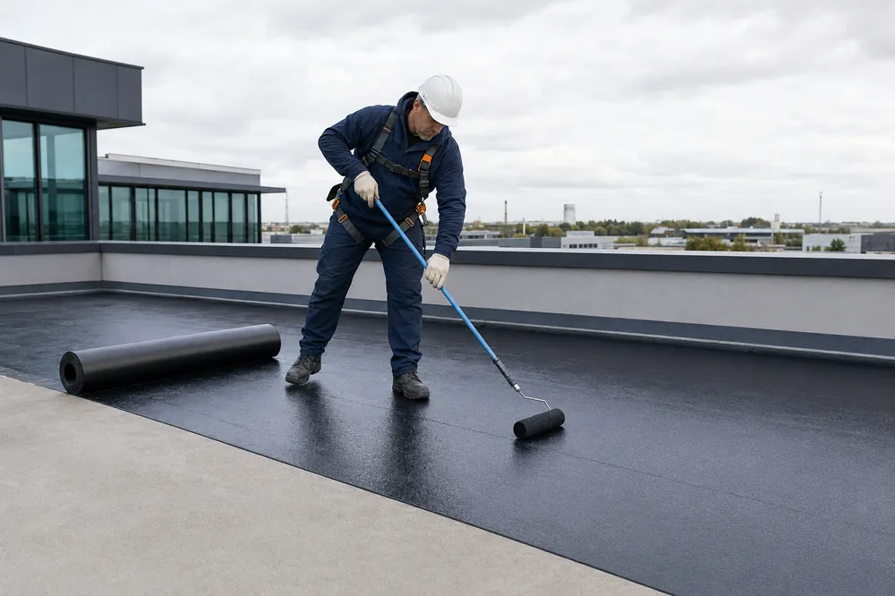
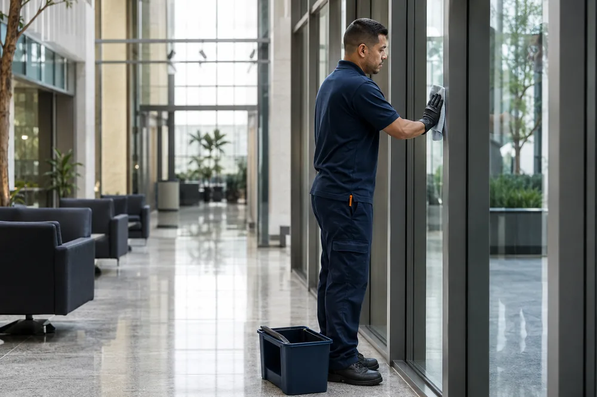

Elétrica
Instalação, reparo e manutenção elétrica predial e industrial, com segurança e método.
Manutenção predial e facilities para empresas e indústrias. Resposta rápida, atendimento direto e um só fornecedor para toda a estrutura.
Atendimento para empresas, indústrias e condomínios.
Empresas e indústrias que mantêm a operação de pé com a Fast Repair


Um problema elétrico, um vazamento ou uma falha de manutenção interrompe a operação, atrapalha a equipe e vira prejuízo. Quanto mais demora para resolver, mais caro fica. A Fast Repair existe para isso não acontecer.
Um só fornecedor para várias frentes prediais. Menos fornecedores para gerenciar, resposta mais rápida quando algo precisa ser resolvido.
Instalação, reparo e manutenção elétrica predial e industrial, com segurança e método.
Reparo hidráulico e combate a vazamento com agilidade.
Revitalização, pintura e pequenos reparos de fachada.

Combate a infiltração antes do prejuízo caro.
Apoio à planta em estrutura, elétrica e instalações, conforme a certificação da equipe.

Limpeza, conservação e zeladoria para o dia a dia funcionar.
Poda, manutenção de áreas verdes e paisagismo para manter o ambiente sempre impecável.
Equipe alocada para dar suporte às demandas administrativas do seu setor, com padrão e confiança.
Contra empresas que vendem porte, a Fast Repair entrega o que falta no mercado: velocidade de resposta e atendimento humano.
Resposta rápida ao chamado e prazo curto de execução, para não parar a operação.
Relação direta com o gestor, sem camadas de burocracia.
Várias frentes prediais com um único responsável. Menos dor de cabeça para você.
Planos preventivos que evitam a parada cara lá na frente.
Simples de começar. Você chama, a gente avalia, a gente resolve.
Fala com a gente no WhatsApp e descreve o que precisa. Atendimento direto, sem burocracia.
Fazemos o diagnóstico, alinhamos prazo e escopo e você aprova antes de começar.
Execução ágil e com padrão, para a sua operação voltar ao normal o quanto antes.
Três formatos que se encaixam no seu momento, do reparo pontual ao contrato completo.
Um reparo pontual, resolvido rápido. A porta de entrada para conhecer o nosso trabalho.
Manutenção programada mensal que evita a parada não programada e o conserto caro depois.
Um só fornecedor para toda a manutenção e conservação do seu prédio ou planta.
Preço sob medida, definido depois de entender a sua necessidade.
O que os gestores dizem sobre trabalhar com a Fast Repair.
A Fast Repair cuida do nosso jardim e ele está sempre impecável. Equipe atenciosa e um resultado que se vê todos os dias.
A Fast Repair cuida da pintura do piso da nossa fábrica. Podemos sempre contar com a qualidade e a velocidade da equipe.
A equipe de serviço administrativo que contratamos para a demanda do nosso setor é excelente. Não poderíamos ter escolhido melhor.
As dúvidas mais comuns de quem contrata manutenção predial.
Manutenção preventiva custa menos do que uma parada não programada. O ponto não é o preço do serviço, é o custo de deixar o problema crescer. Mostramos isso já no diagnóstico.
Com a Fast Repair você reduz o número de fornecedores para gerenciar e ganha resposta mais rápida. Um só responsável para várias frentes prediais.
Comece pequeno. Um chamado avulso ou um diagnóstico é a forma de conhecer o nosso trabalho antes de fechar qualquer contrato maior.
Sem problema. Chame no WhatsApp quando quiser e a gente faz uma avaliação inicial da sua necessidade, sem compromisso.
Manutenção predial e facilities para empresas e indústrias em Curitiba e região. Chame no WhatsApp e receba um orçamento sob medida.